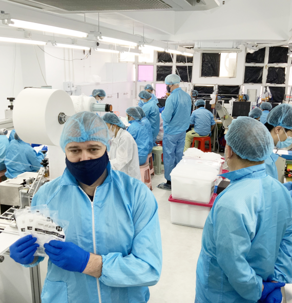

<section class="makes">
  <div class="boxMake">
    <div class="itemMake first">
      
      <div class="boxText">
        <h3 class="titleMake">N95 Respirators</h3>
        <p class="descriptionMake">
          The N95 mask is a form of respiratory protective wear worn over the
          nose and mouth to help minimise the chance of inhaling airborne
          particles like viruses and other germs. It is a disposable mask made
          from synthetic polymer fibres produced in a highly specialised process
          called melt blowing. During this process, the inner layer of the N95
          mask is created which forms the filtration layer capable of filtering
          out at least 95% of airborne particles when worn correctly.
          <p class="descriptionMake">During outbreaks of respiratory illnesses and during periods of
          intense air pollution, wearing N95 masks has been shown to help reduce
          the inhalation of compromised air, filtering out nasty pathogens which
          lead to illness or which can aggravate existing respiratory problems.
          Maintaining clear and unhindered respiration is vitally important for
          remaining fit and healthy and people with pre-existing conditions or
          respiratory fragility can particularly benefit from wearing face masks
          while they are out in public and unable to control the breathing
          environments that they find themselves in.</p>
        </p>
      </div>
    </div>
    <div class="itemMake second">
      
      <div class="boxText">
        <h3 class="titleMake">
          N95 Respirators In Industrial And Health Care Settings
        </h3>
        <p class="descriptionMake">
          Most N95 respirators are manufactured for use in construction and
          other industrial type jobs that expose workers to dust and small
          particles. They are regulated by the National Personal Protective
          Technology Laboratory (NPPTL) in the National Institute for
          Occupational Safety and Health (NIOSH), which is part of the Centers
          for Disease Control and Prevention (CDC).
          <p class="descriptionMake">
            However, some N95 respirators are intended for use in a health care
          setting. Specifically, single-use, disposable respiratory protective
          devices used and worn by health care personnel during procedures to
          protect both the patient and health care personnel from the transfer
          of microorganisms, body fluids, and particulate material. These
          surgical N95 respirators are class II devices regulated by the FDA,
          under 21 CFR 878.4040, and CDC NIOSH under 42 CFR Part 84.
          </p>
        </p>
      </div>
    </div>
    <div class="itemMake">
      <div class="overlay-project">
        
        <p class="overlay-text">
            Given the praised reputation and reliable quality within the
            industry, we have also established preliminary business agreements
            with some hospitals, local governments and medical institutions in
            Guangdong Province.
          </p></div>
      <div class="lastBoxMake">
        <div class="styleLastBoxMake">
          <p class="lastDescriptionMake">
            After years of development, Health Pro has reached stable long-term
            cooperation with many hospitals and medical institutions in Hong
            Kong.
          </p>
          <p class="lastDescriptionMake">
            We are keenly looking forward to expand our market in Mainland China
            and overseas in the future, as we have strong beliefs in our
            products.
          </p>
        </div>
        <div class="contactBoxMake">
          <h4 class="titleContactMake">Proudly Made in Hong Kong</h4>
          <p class="contactDescriptionMake">
            Our factory is located in Hong Kong. <br> Equipped with machines and
            assembly line of the best quality on the market to ensure quality
            control.
          </p>
          <div class="takeContact">
            <button class="btn btn-make">Learn more</button>
            <div class="telBoxMakes">
              <svg class="iconTel"><use></use></svg>
              <a href="tel:+11234445678" class="callMake">
                <span class="titleTelMakes">Contact us</span>
                +1 123 444 5678</a>
            </div>
          </div>
        </div>
      </div>
    </div>
  </div>
</section>
